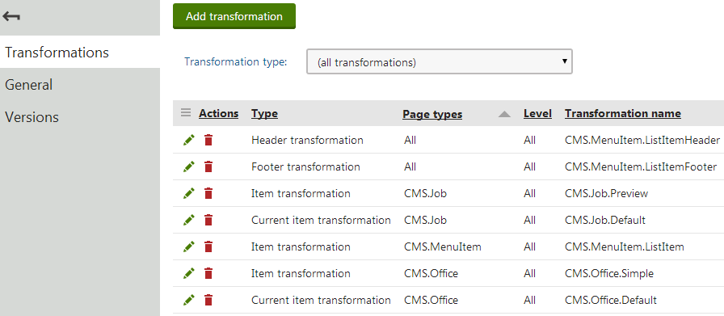
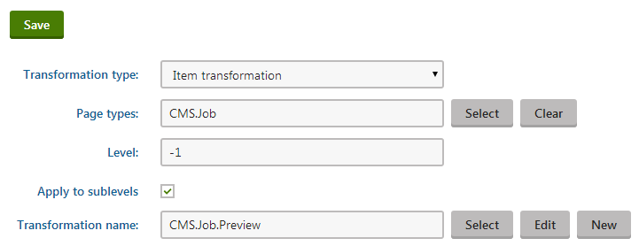
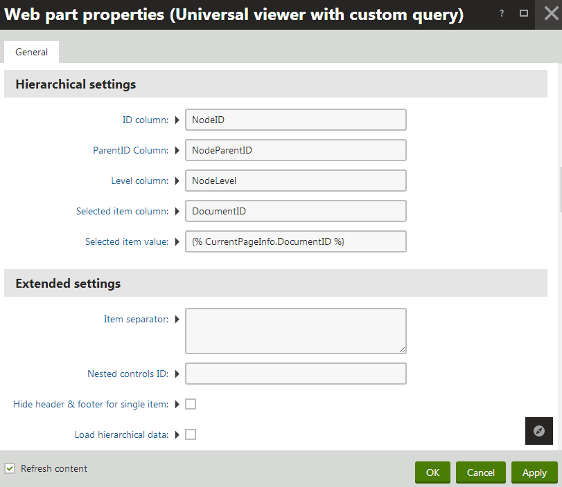

Using hierarchical transformations
The system provides a special type of transformations that you can use to display pages (and other types of appropriately organized data) in a hierarchy. Hierarchical transformations can affect multiple page types and have different content for every level of the hierarchy (for example levels of the page content tree).
Currently, hierarchical transformations are supported by the following web parts:
Hierarchical viewer
Universal viewer
Universal viewer with custom query
As well as the following Kentico controls:
Hierarchical transformations are not directly defined by code. Instead, they serve as containers for a number of standard transformations, which are then applied to the appropriate parts of the source data. A hierarchical transformation can be composed of many sub-transformations that define the overall layout, and the format of the displayed items.
To manage hierarchical transformations, edit a page type in the Page types application on the Transformations tab. We recommend storing transformations that are not related to a specific Page type in 'container' page types.

Viewing the sub-transformations defined for a hierarchical transformation
Managing sub-transformations
When editing a hierarchical transformation in the Page types application, you can Add , Edit ( ) and Delete (
) and Delete ( ) sub-transformations.
) sub-transformations.
The Delete (
) action does not remove the given transformation from the system, only from the currently edited hierarchical transformation.
The purpose of each sub-transformation depends on its settings, which you can configure when adding the transformation or later via the Edit (
) action.
To add a sub-transformation:
Click Add transformation.
Configure the following properties:

Editing a sub-transformationClick Save.
By adding transformations as components and configuring their fields, you can create complex hierarchical transformations suitable for displaying any kind of data.
Example
You can find an example of the Universal viewer web part using a hierarchical transformation on the Corporate Site sample website in the Examples -> Web Parts -> Listings and viewers -> Pages -> Universal viewer section of the content tree.
The Universal viewer web part uses a hierarchical transformation to display the content
Selecting the transformation type
You can select a transformation type for each sub-transformation:
|
Transformation type |
Description |
|
Item transformation |
Applied to all displayed items that are not covered by a specialized transformation type (e.g. alternating items, first items etc.). |
|
Alternating item transformation |
Applied to items that have an even position in the listing order. Every level in the hierarchy has its own separate alternation pattern. |
|
First item transformation |
Applied to the first item on every level in the hierarchy. Only works for levels that contain more than one item. |
|
Last item transformation |
Applied to the last item on every level. Only works for levels that contain more than one item. |
|
Header transformation |
Rendered at the beginning of every level (before the first item on the level). These transformations provide a convenient way to visually separate or style individual levels. |
|
Footer transformation |
Rendered at the end of every level (after the last item on the level). Can be used to close encapsulating elements from the Header. |
|
Single item transformation |
Applied in cases where there is only one item on a level in the hierarchy. |
|
Separator transformation |
Rendered between items on the same level. It is not placed between items on different hierarchy levels (i.e. between a parent item and its child). |
|
Current item transformation |
Applied to the currently selected item (i.e. the page that is being viewed). You must always specify a Page type (or types) for Current item transformations. |
If your hierarchical transformations contains multiple sub-transformations of different types, more than one transformation may be applicable to a single item. In these cases, the hierarchical transformation applies only the transformation type with the highest priority, according to the following order:
Current item (top priority)
First/Last/Single item
Alternating item
Item
Limiting page types
You can choose which page types are affected by sub-transformations. Enter the code names of the required page types into the Page types property. When adding multiple page types, separate them using semicolons, for example CMS.News;CMS.Article. Leaving the field empty applies the transformation to all page types.
Alternatively:
Click Select.
Choose page types by checking the boxes next to the items in the list.
Click Select.
Transformations that are dedicated to specific page types have a greater priority than those set to include all types.
The Page types property has no effect for the Header, Footer or Separator transformation types.
Setting the hierarchy levels
The Level property determines which levels in the hierarchy use the sub-transformation. For example, enter 2 to create a transformation for items on the third level (the number of the first level in the hierarchy is 0). The system always counts the levels from the start of the data hierarchy that is being displayed. In the case of pages, level 0 represents the first content tree level under the selected path, not the root of the entire website.
If you leave Apply to sublevels checked, the transformation also affects all levels below the specified level. You can override the transformation by adding other transformations for specific sublevels (these transformations must have the same Transformation type and affect the same Page types). If your hierarchical transformation contains multiple overlapping transformations that apply to sublevels, the lower levels have higher priority.
To apply a transformation on all levels in the hierarchy, set the Level to an empty value or 0, and leave Apply to sublevels checked.
Assigning the transformation
The value in the Transformation name field specifies the actual transformation used for the purpose defined by the sub-transformation's other properties. You can use an existing transformation or create a new one. Refer to Writing transformations to learn what options the system offers when creating or editing standard transformations.
If you wish to use an existing transformation, type the full name of the transformation.
Alternatively:
Click Select.
Find and click the required transformation in the Select transformation dialog.
Setting the location of sublevels in transformations
When editing the code of item transformations that display hierarchical data, you can specify the position of sublevels by adding a placeholder:
ASCX transformations:
<cms:SubLevelPlaceHolder runat="server" ID="plcSub" />Text transformations:
{^SubLevelPlaceHolder^}
For items that have descendants in the hierarchy, the placeholder is replaced by the child level under the given item (including the header and footer for the new level). If you do not add the sublevel placeholder, the system automatically renders child levels after the code of parent items.
You can use the placeholder in any transformation applied to hierarchical data, not just within hierarchical transformations.
Note: The sublevel placeholder only works if the Hierarchical display mode property of the viewer web part is set to Inner.
Displaying non-page data in a hierarchy
If you wish to use hierarchical transformations to display content, the source data must fulfill the following requirements:
The records must be connected through parent‑child relationships.
All records in the source data must contain a value determining their level in the hierarchy.
The source data needs to be organized in a hierarchical format. You can ensure this by enabling the Load hierarchical data property, which is available for all supported web parts and controls.
Note
Paging is not possible when displaying hierarchical data, because the separation of data into pages breaks the hierarchy.
If any parent records are missing from the source data (for example due to content filtering, WHERE conditions etc.), the disconnected parts of the hierarchy are not displayed.
The most common example of suitable hierarchical data are pages in the Kentico content tree. You can use the Universal viewer with a custom query web part (or QueryUniView control) to load and display other types of data from the database, as long as the data meets the hierarchy requirements.
Open the Pages application and select a page in the content tree.
Switch to the Design tab and add the Universal viewer with a custom query web part.
Assign the required Hierarchical transformation.
Enable the Load hierarchical data property.
Set the properties in the Hierarchical settings section:
Property
Description
ID column
Enter the name of the column in the source data that serves as a unique identifier for records. The web part uses the column to set up the parent‑child relationships of the data.
ParentID Column
Enter the name of the column in the source data that stores the unique identifiers of parent records. The system uses the column to set up the parent‑child relationships of the data.
The value of the ParentID column cannot be null for any items in the data source.
Level column
Enter the name of the column that stores the hierarchy level of records.
Selected item column
Allows you to set up behavior for the displayed items that reflects some type of selection made by users. Enter the name of a column that serves as a unique identifier for records.
The web part identifies the selected item by comparing the value of the specified column with the value of the Selected item value property.
Selected item value
Insert a macro expression that dynamically retrieves the selection value from the current context. The web part selects the record whose value in the Selected item column matches the value returned by the macro.

Configuring the Hierarchical settings of the Universal viewer with custom query web partClick OK.
The web part displays the source data using the selected hierarchical transformation.
Note: To apply hierarchical transformations to completely external data or data sources customized through the API, you need to use the UniView or BasicUniView controls.
See: UniView - Displaying data using hierarchical transformations